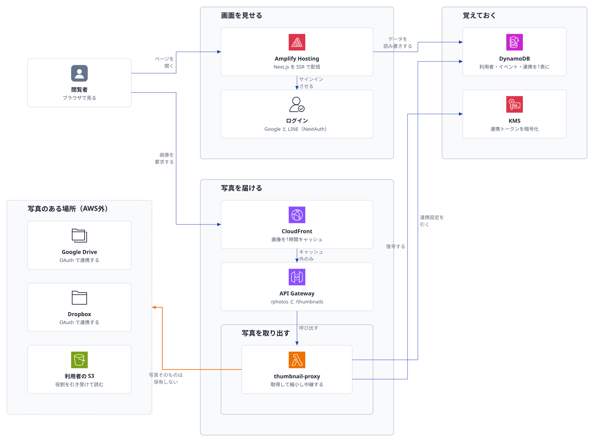
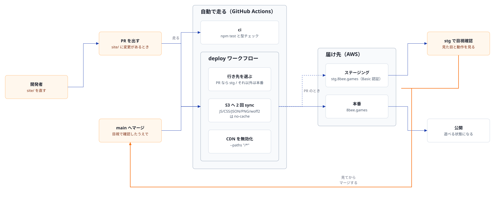

自作の構成図エンジン kouzu が出力した SVG。フォントは SVG 内に サブセットして埋め込んであるため、閲覧環境にフォントが無くても同じ字形で表示される。 このページは表示確認のためのもので、サイトのナビゲーションからは辿れない。
写真を自前で持たず、利用者のストレージから都度取り出して中継する構成。

site/ を直してから公開されるまで。PR ならステージング、main なら本番へ出る。
